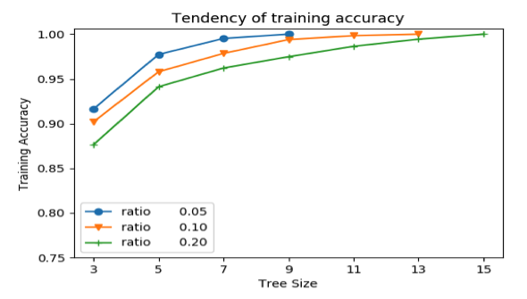
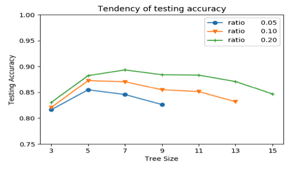

- 45 設定のうち 4215 個のデータと深さ 2、3、4 の組で、深さの上限つきの MaxSAT（DT(max)）のテスト精度が、4 手法の最良から 3 ポイント以内だった数（論文の表1の印から数えた）。
- 深さ 5 で 6 データがメモリ不足厳密解法 DL8.5 は深さ 5 の木で、メモリの上限を 50GB に上げても 6 個のデータで解けなかった。MaxSAT の定式化はそれほどのメモリを要しない。
- 74.61% → 94.69%tic-tac-toe（深さ 3）のテスト精度。MaxSAT の木 1 本から、21 本を AdaBoost でまとめたものに変えたときの値。
訓練データを誤りなく分ける最小の木を求める SAT の方法は、矛盾のないデータを前提とし、過学習しやすい
CART、ID3、C4.5 などの貪欲法は、情報利得が最大の特徴量を上から順に選んで木を作る。貪欲法の木より単純な木があることは早くから知られており、小さな木のほうが未知のデータで精度が高いことも多い。そこで木の大きさ、深さ、訓練精度を基準に最適な木を求める厳密な方法が提案されてきたが、実際にはまだ貪欲法が主に使われている。
厳密な方法は 2 つに分かれる。Bessiere ら（2009）、Narodytska ら（2018）、Avellaneda（2020）は、訓練データを完全に正しく分類することを制約にして、ノードの数や深さを最小にする。この方法には矛盾のないデータを必要とし、過学習を起こしやすく、必要以上に大きな木を作るという批判がある。貪欲法も訓練精度を少し犠牲にして汎化を良くする枝刈りを使う。もう一方の方法（DL8、OCT、BinOCT、CP-DT、DL8.5、OSDT など）は、深さの上限のもとで訓練精度を最大にする。こちらは雑音のあるデータを自然に扱えるが、木の形に課す制約が深さの上限だけなので、細く深い木が最良のときにはそれを見つける計算が重い。
論文は Narodytska らの SAT の定式化を少し変えて MaxSAT の定式化にするだけで、これらの欠点の多くが解消されると主張する。MaxSAT を最適まで解くのは対応する SAT を解くより難しい。しかし完全な精度を求めなければ木も論理式も小さくて済み、最新の MaxSAT ソルバーはずっと大きな論理式を扱える。
扱うのは二値の特徴量 \(f_1, \dots, f_K\) と二値のクラスをもつ \(M\) 個の例 \(e_q = (x_q, c_q)\) で、カテゴリや数値の特徴量は one-hot 符号化などで二値に直しておく。学習する木は、内部ノードがちょうど 2 つの子をもつ二分木（full binary tree）である。
例ごとに「正しく分類された」を表す変数を柔らかい節にし、正しく分類する例の数を最大にする
Narodytska らの SAT の定式化は、大きさ \(N\) の木で全例を正しく分類できるかという判定問題 \(P(E, N)\) を表し、\(N\) を変えながら解いて最小の木を得る。節は 3 つの部分に分かれる。木の構造の制約、内部ノードへの特徴量と葉へのクラスの割り当ての制約、そしてすべての例を正しく分類する制約である。変数は次のとおりで、ノードには 1 から \(N\) の番号がつく。
- \(v_i\)：ノード \(i\) が葉なら真。\(l_{ij}\)、\(r_{ij}\)：ノード \(j\) がノード \(i\) の左（右）の子なら真。
- \(c_i\)：葉 \(i\) のクラスが 1 なら真。
- \(d^{v}_{r,i}\)：根からノード \(i\) までの道のどこかで、特徴量 \(f_r\) が値 \(v\) の例を外す分岐（テスト \([f_r \neq v]\)）が使われていれば真。
正例 \(e_q\) の特徴量 \(f_r\) の値を \(\sigma(r, q)\) と書くと、「負のクラスの葉には正例が届かない」ことは \(v_i \wedge \neg c_i \rightarrow \bigvee_{r=1}^{K} d^{\sigma(r,q)}_{r,i}\) と書ける。負のクラスの葉 \(i\) までの道のどこかに、\(e_q\) を外す分岐があればよい。負例についても同じ形の節を置く。
MaxSAT の定式化では、木の構造と割り当ての節（第 1、2 部）はそのまま硬い節として残す。そのうえで例ごとに、\(e_q\) が正しく分類されるときだけ真になれる変数 \(b_q\) を導入し、分類の節（第 3 部）の前に \(b_q \rightarrow\) をつける。
最後に各 \(b_q\) を 1 つずつ柔らかい節にする。満たされた柔らかい節の数が、正しく分類された例の数になる。こうして解く問題は、大きさ \(N\) の木のうち正しく分類する例の数が最大のものを求める \(P^{*}(E, N)\) に変わる。全例を分類する節は硬い節から柔らかい節に移り、矛盾する例があっても解が存在する。
深さを表す変数と「ノードを少なくとも i 個使う」変数を足し、深さと大きさを上限でもちょうどの値でも指定できるようにする
大きさが同じでも木の形は違いうる。大きさ 7 の木には片側にだけ伸びた深さ 3 の木もあれば、深さ 2 の完全二分木もある（図2）。論文は深さと大きさの両方で木の形を制御できるようにする。根の深さを 0 と数え、ノード \(i\) が深さ \(t\) にあるとき真になる変数 \(\mathit{depth}_{i,t}\) を導入する。
- 根は深さ 0 にあり、各ノードはちょうど 1 つの深さにある。ノード \(j\) が深さ \(t\) のノード \(i\) の子なら、\(j\) は深さ \(t+1\) にある（\(\mathit{depth}_{i,t} \wedge l_{ij} \rightarrow \mathit{depth}_{j,t+1}\)、右の子も同じ）。
- 深さの上限が \(U\) なら、深さ \(U\) にありうるノードはすべて葉にする（\(\mathit{depth}_{i,U} \rightarrow v_i\)）。
- 深さをちょうど \(U\) にしたいときは、深さ \(U\) のノードが少なくとも 1 つあるという節を足す。
大きさの上限も指定できる。二分木の大きさは 3 以上の奇数で、深さの上限が \(U\) なら大きさは \(2^{U+1}-1\) 以下、深さがちょうど \(U\) なら \(2U+1\) 以上になる。\(N\) を大きさの上限とし、「ノードを少なくとも \(i\) 個使う」ときに真になる変数 \(m_i\)（\(i = 3, 5, 7, \dots, N\)）を置く。\(m_3\) は真に固定し、\(m_{i+2} \rightarrow m_i\) を課す。そのうえで、すべての節 \(C\) について、そこに現れる最大のノード番号を \(j\) として、\(C\) を次のように置き換える。
使わないノードに関わる節は、こうして自動的に無効になる。導入部で論文はこの定式化なら大きさ、深さ、訓練精度の任意の線形結合を目的関数にできると述べる。ただし、その形の目的関数での実験は報告していない。
AdaBoost の例の重みを柔らかい節の整数の重みにして、重み付きの MaxSAT で弱学習器の木を学ぶ
AdaBoost は \(T\) 回の反復で学習器 \(h_t\) を順に作り、誤分類した例ほど次の反復で重く扱う。反復 \(t\) の誤り率を \(\epsilon_t\) として係数を \(\alpha_t = \tfrac12 \ln\frac{1-\epsilon_t}{\epsilon_t}\) とし、最終的な予測は \(\alpha_t\) で重みづけした投票で決める。
MaxSAT の定式化は柔らかい節に重みをつけられる（重み付き部分 MaxSAT）ので、例の分布 \(D_t\) を節 \(b_q\) の重み \(w^t_q\) で近似すればよい。反復ごとに解く問題は前の 2 つの節で述べた深さと大きさを制御できる定式化と、柔らかい節の重みを除いて同じである。最初の反復では重みをすべて 1 にする。次の反復の重みは AdaBoost の更新で正規化した値を、その最小値で割って丸めた整数にする。
\(\varphi\) は正しいクラスを返す関数である。論文によれば、アンサンブルの各木は小さくてよいので、この組み込みは大きなデータを扱ううえでも有利になる。
訓練データを誤りなく分ける木は、それより小さい木よりテスト精度が低かった
実験には CP4IM のデータを one-hot 符号化で二値にしたものを使う。最初の実験では、MaxSAT の定式化で大きさ 3 から順に木を学び、訓練データの全例を正しく分類できる大きさに達するまで大きくした。最後に得られる木は Narodytska らの SAT の定式化で得られる木と同じ大きさになる。Narodytska らにならって訓練データの割合を 0.05、0.1、0.2 と小さく取り、残りをテストに使った。乱数の種を変えて 10 回繰り返し、MaxSAT ソルバー RC2 で時間制限なしに最適解まで解いた。
breast-cancer では大きさとともに訓練精度が上がって 100% に達したが、テスト精度は途中から下がった（図3）。全例を正しく分類する木は訓練データに過学習しており、訓練精度は低くても、より小さな木のほうがテストでは精度が高い。論文によれば、この傾向がここまではっきりしないデータもあるが、訓練精度が上がってもテスト精度は良くて横ばい、という平坦な区間はほぼ毎回見られた。


深さ 2〜4 の木では、MaxSAT のテスト精度は CART や DL8.5 に近く、45 の設定のうち 42 で最良から 3 ポイント以内だった
15 個のデータで、MaxSAT の木を貪欲法の CART（scikit-learn）および厳密解法の DL8.5（Python パッケージ 0.0.9）と比べた。どの手法も深さの上限 \(d \in \{2, 3, 4\}\) 以外は既定の設定とした。MaxSAT は深さをちょうど \(d\) にする DT(exact) と、\(d\) を上限にする DT(max) の 2 通りを試した。評価には層化した 5 分割の交差検証を乱数の種を変えて 10 回繰り返したものを使った。ソルバーには RC2 より大きなデータに強く、限られた時間でも良い解を返せる Loandra を使った。訓練の制限時間は 15 分、メモリの上限は 16GB である。
論文の表1では、テスト精度が最良から 3 ポイント以内の値に印がついている。最良の値と印のついた値を数えると、DT(max) は 45 の設定のうち 42、DT(exact) は 41 で最良から 3 ポイント以内に入った。DT(max) で外れたのは heart-cleveland の深さ 3 と splice-1 の深さ 3、4 の 3 つで、splice-1 の深さ 4 では CART が 95.25%、DT(max) が 83.18% と差が大きい。論文はこの結果を、MaxSAT の木は予測性能で貪欲法とも厳密解法とも競えると要約している。
一方、15 分以内に最適性を証明できたのは主に深さ 2 の場合だった。DT(max) は深さ 2 では 15 個のうち 11 個のデータで全試行の最適性を証明したが、深さ 3、4 ではほとんどが時間切れになった。DL8.5 は深さ 4 まで、メモリ不足の 2 件を除いて最も長くても 134.72 秒で最適解を得ている。論文は、MaxSAT の解が最適性を示せなくても DL8.5 の最適解に近いこと、そして DL8.5 は深い木で大量のメモリを要するのに対し MaxSAT はそうではないことを強調する。深さ 5 では、DL8.5 はメモリの上限を 50GB に上げても 6 個のデータで解けなかった。
| データ（例の数 / 特徴量の数） | DT(max) テスト精度 | CART テスト精度 | DL8.5 テスト精度 | DT(max) 最適性の証明 | DL8.5 時間（秒） |
|---|---|---|---|---|---|
| anneal（812 / 89） | 84.29 | 81.22 | 85.26 | 0% | 1.76 |
| audiology（216 / 146） | 93.91 | 94.16 | 93.53 | 0% | 2.42 |
| australian-credit（653 / 124） | 85.31 | 84.99 | 85.33 | 0% | 6.96 |
| breast-cancer（683 / 89） | 94.45 | 93.80 | 94.14 | 7% | 0.71 |
| car（1728 / 21） | 87.49 | 87.65 | 87.49 | 74% | 0.03 |
| heart-cleveland（296 / 95） | 76.09 | 79.37 | 75.85 | 0% | 2.99 |
| hypothyroid（3247 / 86） | 97.83 | 97.87 | 97.86 | 0% | 2.95 |
| kr-vs-kp（3196 / 73） | 93.56 | 90.43 | 93.75 | 0% | 1.60 |
| lymph（148 / 68） | 80.45 | 79.05 | 81.80 | 0% | 0.44 |
| mushroom（8124 / 112） | 99.66 | 96.53 | 99.90 | 0% | 4.94 |
| primary-tumor（336 / 31） | 82.61 | 79.83 | 83.27 | 0% | 0.10 |
| soybean（630 / 50） | 94.19 | 90.46 | 94.35 | 0% | 0.20 |
| splice-1（3190 / 287） | 85.60 | 90.96 | 92.83 | 0% | 81.01 |
| tic-tac-toe（958 / 27） | 73.42 | 72.04 | 72.22 | 0% | 0.08 |
| vote（435 / 48） | 94.18 | 94.67 | 93.95 | 0% | 0.23 |
表 深さの上限 3 での結果（論文の表1から深さ 3 の行を抜き出した）。テスト精度は %。青字は DT(max) が 4 手法（DT(exact) を含む）で最良だった値、橙字は DT(max) が最良から 3 ポイントより離れた値。「最適性の証明」は 15 分以内に最適性を示せた試行の割合。データ名の hypothyroid は論文の表では hypothyrold と表記されている。
MaxSAT の木 21 本を AdaBoost でまとめると、訓練精度は木 1 本や bagging より上がり、テスト精度は CART を使う AdaBoost と競った
表1で MaxSAT の成績が良くなかった 6 個のデータ（anneal、australian-credit、car、heart-cleveland、primary-tumor、tic-tac-toe）で、MaxSAT による AdaBoost（BS）を、MaxSAT の木 1 本（DT(max)）、MaxSAT の木を bagging でまとめたもの（BG）、CART による AdaBoost（BSH）と比べた。学習器の数は 21、各木の大きさ・深さ・制限時間（15 分）はすべて同じにした。データの 8 割を訓練、2 割をテストに使い、乱数の種を変えて 10 回繰り返した。
論文の表2では、BS の訓練精度は 18 の設定（6 データ × 深さ 3 通り）すべてで木 1 本を上回り、bagging（BG）の訓練精度も 17 の設定で上回った。テスト精度の伸びが大きいのは tic-tac-toe と car で、tic-tac-toe の深さ 3 では木 1 本の 74.61% が 94.69% に、car の深さ 2 では 84.68% が 96.53% になった。ただし heart-cleveland と primary-tumor の深さ 4 のように、テスト精度が木 1 本を下回った設定もある。BSH と比べると勝ち負けはデータと深さによって分かれ、論文はこれを CART による AdaBoost と競える結果だとしている。
SAT の系統の「誤りなく分ける最小の木」から、深さの上限のもとで誤分類を減らす問題へ移った
- 何を最適にするか：Bessiere ら、Narodytska ら、Avellaneda の SAT の方法は訓練データの完全な分類を制約にし、大きさや深さを最小にする。この論文は大きさ（と深さ）を固定または上限にして、正しく分類する例の数を最大にする。DL8.5 や MurTree など動的計画法の系統と同じ問題設定に近づいた。
- 解き方：SAT の符号化はほぼそのまま使い、分類の節を柔らかい節に移すだけである。柔らかい節には重みをつけられるので、AdaBoost の重みもそのまま入る。
- 最適性：ソルバーに Loandra を使った比較実験では、制限時間内に最適性を証明できたのは主に深さ 2 で、深さ 3 以上では途中で得られた最良の解を使っている。厳密な定式化だが、実験の多くは時間を区切って良い解を得る使い方である。
- 特徴量：二値の特徴量を前提とし、数値やカテゴリの特徴量は one-hot 符号化などで二値にしておく。二値化せずに扱う SAT の符号化は Shati ら が提案している。
@inproceedings{hu2020maxsat,
title = {Learning Optimal Decision Trees with {MaxSAT} and its Integration in {AdaBoost}},
author = {Hu, Hao and Siala, Mohamed and Hebrard, Emmanuel and Huguet, Marie-Jos{\'e}},
booktitle = {Proceedings of the Twenty-Ninth International Joint Conference on Artificial Intelligence ({IJCAI-20})},
pages = {1170--1176},
year = {2020},
doi = {10.24963/ijcai.2020/163}
}
ページの数値と図は IJCAI 2020 の出版版（ijcai.org で公開されている PDF）による。書誌情報は Crossref で確認した。編者や出版社の欄は確認していないので省いた。